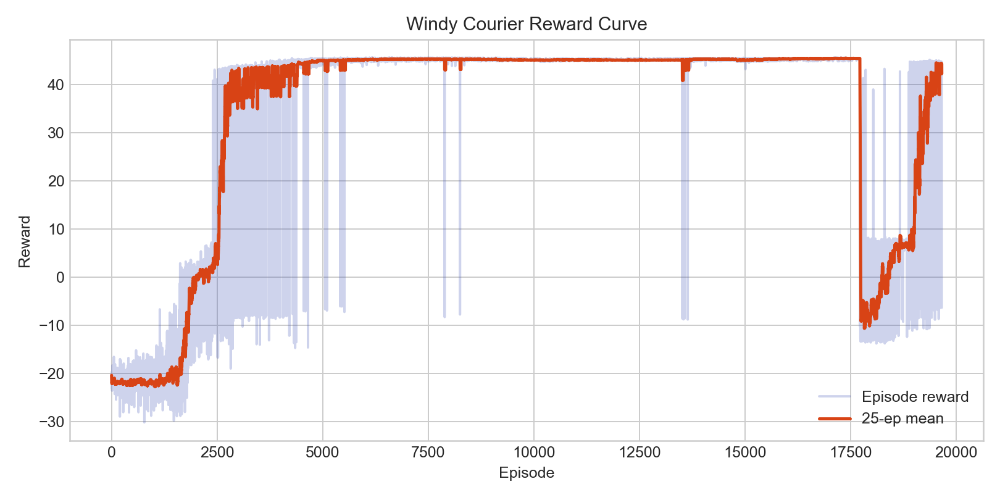
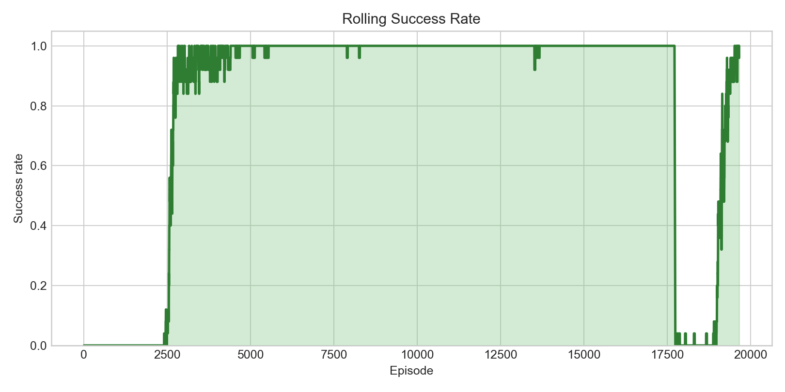
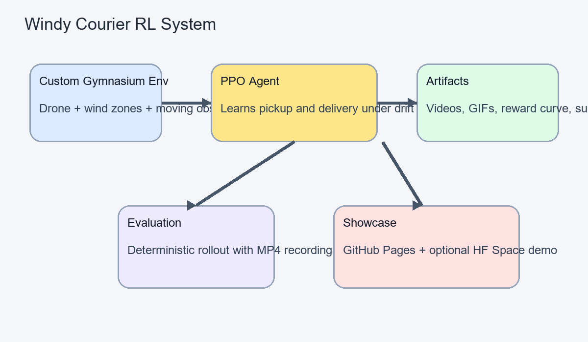

Watch Learning Happen
From random drift to purposeful delivery
The project saves a baseline video, milestone checkpoints, and a final trained rollout so improvement is easy to see. Run the training script, then regenerate the static page assets with the post-processing script.

Final Trained Policy
Metrics
Learning signals captured during training


How It Works
Environment, PPO policy, and recording pipeline
The environment exposes position, velocity, package state, obstacle position, and local wind. PPO learns a control policy, while scripts automatically save videos, plots, and a web-ready demo bundle.

Why RL
This is a sequential decision problem, not a static prediction task.
There is no single correct move in each state because the best action depends on future wind drift, obstacle timing, and whether the package has already been picked up. That makes reinforcement learning the right framing.